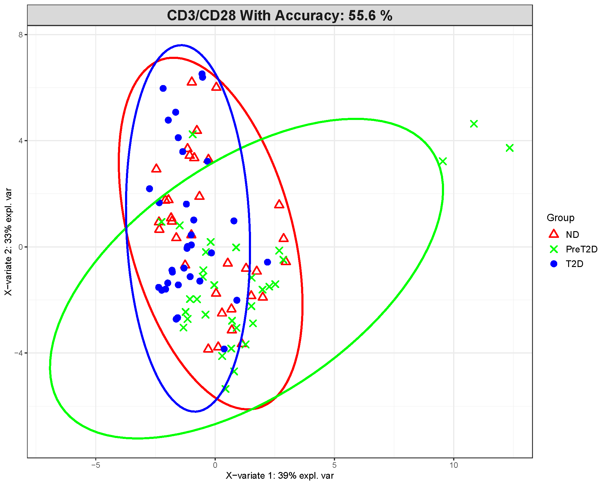
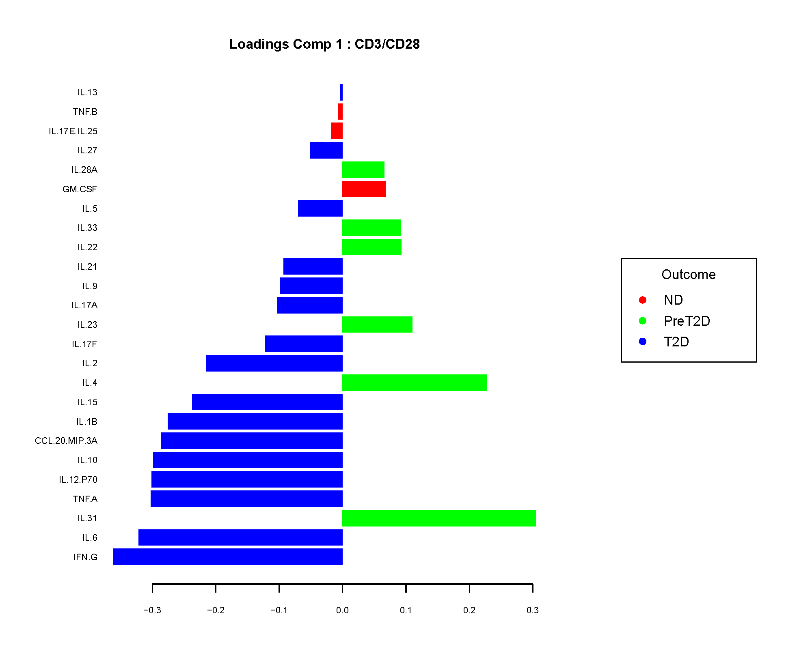
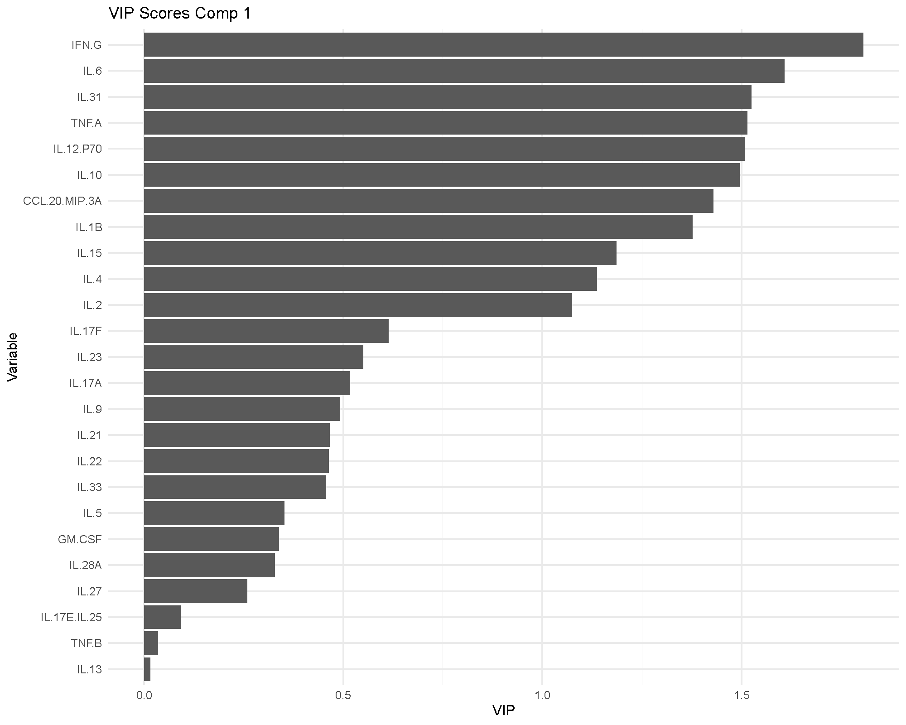
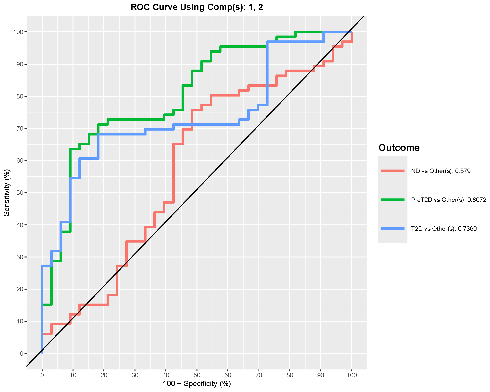
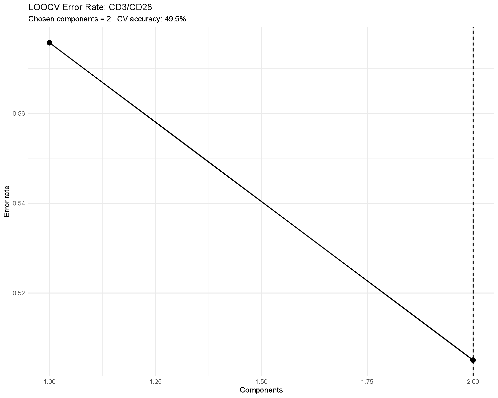

When to use (s)PLS-DA
Sparse Partial Least Squares Discriminant Analysis, or sPLS-DA, is a supervised multivariate method. It is useful when your goal is to see whether whole cytokine profiles separate predefined groups and which features drive that separation.
Because the method uses the class labels directly, it is more powerful for discrimination than unsupervised methods such as PCA, but it also requires more caution when interpreting apparent separation.
When not to use (s)PLS-DA
sPLS-DA is usually not the best first choice when:
- the response is numeric rather than categorical
- the goal is unsupervised pattern discovery rather than supervised discrimination
- batch-aware integration is required across multiple studies, in which case MINT is a better fit
Example context
This article uses results from the ExampleData1 dataset
built into the application. The example focuses on the CD3/CD28
treatment condition and compares Non-Diabetic (ND), Pre-Diabetic
(PreT2D), and Type 2 Diabetes (T2D) subjects.
Which app arguments matter most
The settings that most strongly affect interpretation are:
-
sPLS-DA Comparison Column: defines the classes the model is trying to separate. -
sPLS-DA Stratification Column: adds a second visual grouping layer when you want shapes or labels within the main classes. -
Number of Variables: controls how many cytokines are kept on each component. -
Cross-Validation OptionandNumber of Folds: control how model stability is checked. -
Number of Components: controls how much latent structure the model calculates and displays. -
Plot ROC,Draw Ellipse,Shaded Background Prediction, andConfusion Matrix: add validation and visual aids that help you judge how convincing the separation really is. -
Perform Batch Correction?,Select Batch Column,Perform Multilevel Analysis?, andSelect Repeated Measures Column: matter only when your study includes known batch effects or repeated measurements.
For app users, the most practical rule is to avoid changing many of these at once. Start with a reasonable number of variables and components, then use cross-validation and ROC outputs to judge whether the model is actually supporting the visual separation.
What outputs matter most
2D component scores plot

This plot shows where samples fall after the cytokine data are compressed into latent components. Clearer clustering and less overlap between groups suggest stronger discrimination.
In this example, the group separation is only moderate. The displayed model accuracy is about 55.6%, which is not strong for a three-class problem. That means the visual separation should be interpreted cautiously rather than as proof of a reliable classifier.
Loadings plot

The loadings plot shows which cytokines contribute most to a component. Larger absolute loading values indicate stronger contribution to the separation captured by that component.
The sign of the loading is directional, not a p-value. In practice, app users usually care most about the magnitude because it identifies the cytokines that are driving the component most strongly.
VIP scores

Variable Importance in Projection (VIP) scores summarize how influential each cytokine is in the fitted model. A common rule of thumb is that VIP values above 1 indicate particularly influential variables.
VIP is useful because it gives a more model-level view of importance than a single loading plot. If the same cytokines appear important in both the loadings and VIP views, confidence in their relevance usually improves.
ROC and AUC

ROC curves summarize discrimination performance. In multiclass settings, the app reports one-vs-rest style performance, so the AUC for one group should be read as “how well this group is separated from the others combined.”
In this example, PreT2D shows the best one-vs-rest discrimination, with an AUC around 0.8. That suggests the model distinguishes PreT2D better than the other classes, even though the overall model accuracy is still modest.
Cross-validation performance

Cross-validation is one of the most important outputs in supervised multivariate analysis. It tells you whether the apparent separation is likely to generalize beyond the current dataset.
In the example, the error rate remains fairly high, which matches the modest overall accuracy. That agreement is useful: it means the validation outputs are reinforcing the same cautious interpretation.
Common cautions
Keep these points in mind when using sPLS-DA:
- It is supervised, so apparent separation can look stronger than it would in an unsupervised method.
- Small sample sizes and large variable counts increase overfitting risk.
- A visually attractive score plot is not enough on its own; cross-validation and ROC summaries matter.
- The selected variables are model-dependent, so they should be treated as candidates for follow-up rather than final biological conclusions by themselves.
How to reproduce the result in the app
- Filter the dataset to the groups and treatment condition you want to compare.
- Choose
Sparse Partial Least Squares - Discriminant Analysis (sPLS-DA). - Set
sPLS-DA Comparison Column,Number of Variables, andNumber of Components. - Decide whether to turn on
Cross-Validation Option,Plot ROC,Draw Ellipse,Shaded Background Prediction, andConfusion Matrix. - Review the score plot, loadings, VIP scores, and validation metrics together.

What to read next
Related articles:
- Understanding PCA for an unsupervised first look at the same dataset.
- Understanding MINT sPLS-DA for supervised separation across multiple batches or studies.
- Understanding Random Forest and Understanding XGBoost for alternative classifiers.
Last updated: April 06, 2026